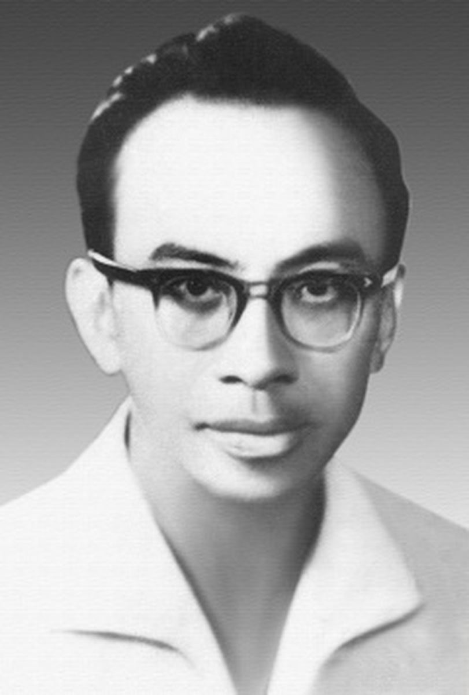

Họ Phạm. Sinh tháng 9-1918 ở Hà Nội. Học: trường Thầu dòng, trường ẠSarraut trường Luật. Đậu cử nhân luật rồi sang du học tại Pháp. Đã đậu luật khoa tiến sĩ và cao đẳng văn chương; hiện đang soạn thi thạc sĩ học và tiến sĩ văn khoa.

Đã xuất bản: Yêu đương (1933), Anh Nga (1934), Tiếng địch sông Ô (1935), Tần Ngọc (1937).
Ngoài ra đã đăng báo: Con voi già( tặng Phan Sào Nam), Hận chiến sĩ, Tần Hồng Châu, Lòng hối hận, Chàng Lưu, Kinh Kha, Huyền Trân Công chúa, Tây Thi...
Người thiếu niên ấy cũng như hầu hết những thiếu niên, đã sống những giấc mộng êm ái êm dịu. Và cũng như hầu hết những thiếu niên, chàng đã tưởng ở đời không có gì quan trọng hơn những vui buồn thương nhớ của mình. Chàng đã kể lể dông dài và lắm lúc đã quên rằng người nói đành không bao giờ chán nhưng người ta rất dễ chán.
Cũng may, thỉnh thoảng Huy Thông biết vờ quên mìng đi để những giấc mộng ái ân của người đượm một vẻ mơ hồ riêng.
Hoặc người tạo ra một cái không khí là lạ khiến ta nhớ đến những chiêm bao chính ta đã từng trải qua hay những chiêm bao Shakespeare đã đưa lên sân khấu.
Hoặc người cầu cứu đến lich sử là cái môn người vẫn sở trường dẫn nẻo cho nguồn mơ. Người mượn lời một thiếu nữ trong mộng để gợi lại cảnh xưa:
Ngân lang! Ngân lang! Chàng còn nhớ,
Chiều xuân xưa, trên ngựa, đỡ kim cầu,
Chàng thảo mấy dòng thơ như nhạn múa
Trên tờ mây thiếp vẫn giữ bên tim sầu?
Người lưu luyến cái hình ảnh Tây Thi, người ước ao cái sung sướng của Phù Sai, Phạm Lãi. Người gọi bạn:
Đi! Cùng anh tới Cô Tô cảnh cũ
Chờ giăng lên mơ nữa giấc mơ xưa.
Nhưng Huy Thông không phải chỉ biết những giấc mộng ái ân êm dịu. Khi yêu người còn có những khát vọng lạ lùng:
Tôi muốn hoá một con chim
Bay lên cao mơn trớn sợi mây hồng;
Muốn uống vào trong buồng phổi vô cùng
Tất cả ánh sáng dưới gầm trời lồng lộng;
Muốn có đôi cánh tay vô ngần to rộng
Để ôm ghì cả vũ trụ vào lòng tôi!
Một người có những ham muốn dị thường như thế ắt phải ưa sống cái đời những vị anh hùng thời trước, hồi thế giới còn hoang vu, hồi một người trượng phu còn có thể tin rằng mỗi hành vi của mình đều làm xao động cả đất trời. Đặc sắc của Huy Thông chính là ở những bài anh hùng ca như bài Tiếng địch sông Ô tả bước đường cùng của Hạng Tịch. Chưa bao giờ thi ca Việt nam có những lời hùng tráng như trong tác phẩm của người thiếu niên hiền lành và xinh trai ấy. Hãy nghe Hạng Tịch than:
Nén đau thương, vương ngậm ngùi sẽ kể
Niềm ngao ngán vô biên như trời bể.
Ôi! Tấm gan bền chặt như Thái Sơn,
Bao nhiêu thu cay dắng chẳng hề sờn!
Ôi. Những trận mạc khiến "trời long đất lở"
Những chiến thắng tưng bừng. Những vinh quang rực rỡ
Ôi! Những võ công oanh liệt chốn sa trường!
Những buổi tung hoành, lăn lộn trong rừng thương!
Những tướng dũng bị đầu văng trước trận...!
Nhưng, than ôi vận trời khi đã tận,
Sức "lay thành nhổ núi" mà làm chi
Hơi văn mà đến thế thực đã đến bực phi thường. Anh hùng ca của Vitor Huygo tưởng cũng chỉ thế. Giữa cái ẻo lả, cái uỷ mị của những linh hồn đang chờ sa ngã, thơ Huy Thông đã ồ ạt đến nhưmột luồng gió mạnh. Nó cuốn bừa đi. Người xem thơ ngạc nhiên và sung sướng và thấy mình vẫn còn đủ tráng khí để buồn cái buồn Hạng Tịch.
Chỉ tiếc rằng Huy Thông, người anh hùng trong mộng tưởng ấy, lại cũng là một thiếu niên khao khát yêu đương và rất lễ phép với đàn bà. Có khi vô tình người đã phác hoạ Hạng Tịch theo hình ảnh của mình. Đã đành Hạng Tịch mê Ngu Cơ, đã đành ái tình không chia kim cổ kim, nhưng tình yêu của Hạng Tịch hẳn phải thế nào chứ!
Août - 1941
ANH NGA [1]
Niềm ái ân chưa được biết bao giờ,
Ta vừa biết phút giây trong giấc mộng.
Mà mộng nọ, than ôi! Còn đâu bóng!
Ta gục đầu thổn thức nhớ điệu đàn
Và âm thầm tưởng tiếc bóng đêm tan.
Huy Thông
Các vai: Anh Nga
Ngân Sinh
Tiếng ca nơi xa xa
Nhịp tiếng tỳ bà đưa
(Tỳ bà văng vẳng)
Các vai: Anh Nga, Ngân Sinh
Một tiếng ca nơi xa xa
Nhịp tiếng tỳ bà đưa
Tiếng ca
Hương muôn hoa êm đềm quyến luyến
Vừng cây khuya nghênh gió dưới trăng ngà.
Nhưng đêm biếc rồi tàn, giăng xuân biến,
Và vừng hồng sẽ tắm nắng chân mây xa.
Ngân Sinh
Vừng hồng sẽ tắm nắng chân mây xa...
Nhưng, bây giờ, trên không tím,
Lướt sao êm, mây lả thướt tha qua;
Lặng ngắm giăng mơ màng, hoa chúm chím,
Và, bên tường, len lén, gió lay hoa.
Trên đôn xứ nghiêng đờn, ta đứng dậy,
Rồi, nhịp hài, lững thững bước thư sinh...
Ta thấy lòng say sưa... Và lại thấy
Hương ái ân nhẹ quện tim đa tình.
Đêm bâng khuâng... giời ơi! Sao đẹp đẽ!
Nhưng mà... sao tẻ ngắt, sao buồn tênh?
Là vì, Anh Nga ơi! Vườn vắng vẻ,
Thiếu xiêm đào tha thướt dưới trăng chênh.
Hứa cùng ta sẽ trăm năm ân ái,
Nỡ đi đâu để bạn đắng cay lòng?
Để bạn lòng, trơ vơ phòng trống trải,
Ấp tim sầu lạnh ngắt như băng đông!
Tiếng ca
Bóng đêm như chan hoà niềm quyến luyến,
Như vuốt ve du khách dưới giăng ngà...
Nhưng đêm biếc rồi tàn, giăng xuân biến,
Và vừng hồng sẽ tắm nắng chân mây xa!
Ngân Sinh
Thì tắm nắng chân mây đi! Vừng ô hỡi!
Vì hơi đêm phơi phới
Vì giăng cao rắc ánh
Trên vườn yên,
Vì sao khuya lóng lánh
Xứ muôn tiên...
Vì cảnh đẹp dưới giăng xanh tuy êm ái,
Nhưng lòng ta còn mãi
Nhớ thương người đẹp cũ chốn dạ đài.
Anh Nga
Dạ đài trống trải,
Ôm lòng đau, ta cũng mãi nhớ thương ai.
Ngân Sinh
Bên khóm phù dung giăng mạ biếc,
Ai bâng khuâng, nhớ tiếc,
Hay chờ mong?
Anh Nga
Hỡi thư sinh thổn thức dưới giăng trong!
Nơi thiếp mơ mau lẹ gót mơ mòng!
Chàng có thấy, bên phù dung lả lướt,
Bóng ai đi tha thướt
Như tiên nga thấp thoáng suối Thiên thai?
Ngân Sinh
Bóng ai đi tha thướt...?
Hay hồn êm kẻ khuất chốn dạ đài?
Tiếng ca
Hãy cùng ai, nơi hương hoa quyến luyến,
Ngắm vườn lam ngây ngất dưới trăng ngà!
Vì đêm biếc rồi tàn, giăng xuân biến,
Và vừng hồng tắm nắng chân mây xa!
Anh Nga
Chàng... Chàng tới gần nơi hương hoa quyến luyến!
Kẻo nắng hồng đẫm tắm chân mây xa...
Ngân Sinh
Hỡi giai nhân!
Nàng là au mà diễm lệ, thanh tân?
Nàng là ai mà âm thầm, huyền ảo,
Để, xuyên qua liên tiền thảo,
Ánh giăng xuân
Nhẹ nhàng vờn trên dung nhan kín đáo?
Nàng là người trong Quảng điệu hay Chiêu quân?
Hay tiên nga lạc cánh xuống phàm trần?
Anh Nga
Thiếp là người chàng mơ tưởng, nhớ thương.
Ngân Sinh
Nàng?
Anh Nga
Chàng làm chi mà bỗng dáng bàng hoàng?
Ngân Sinh
Nàng?
Nàng là người ta mơ tưởng, nhớ thương?
Là người tiên ta tiếc bóng bao đêm trường?
Anh Nga
Ngân lang, chàng hỡi! Bao đêm trường!
Ngâ Sinh
Nhưng không! Không, nàng quyết chẳng phải ai!
Vì Anh Nga còn đâu nữa trên trần ai!
Anh Nga
Ngân lang! Ngân lang! Chàng còn nhớ,
Chiều xuân xưa, trên ngựa, đỡ kim cầu,
Chàng thảo mấy dòng thơ như nhạn múa
Trên tờ mây thiếp vẫn giữ bên tim sầu?
Ngân Sinh
Hỡi kẻ ta chờ mong...! Nhưng chẳng phải!
Vì mỹ nhân xiêm thoáng trên lầu xưa
Đã lẩn bóng như làn mây êm ái
Và ngàn năm đã lịm giấc say sưa!
Tiếng ca
Hãy cùng ai, nơi hơi đêm quyến luyến,
Đứng đê mê tình tự dưới giăng ngà!
Vì đêm biếc rồi tàn, giăng xuân biến,
Và vừng hồng sẽ tắm nắng chân mây xa,
Anh Nga
Chàng ơi! Chàng ở lại,
Chờ vừng hồng tắm nắng chân mây xa...
Và, biệt chàng, thiếp xin đi, đi mãi mãi!
Vì, than ôi! Chàng quên lãng bóng Anh Nga,
Ngân Sinh
Anh Nga! Anh Nga!
Nàng dừng hài hãy đứng dưới vòm hoa!
Anh Nga
Ngân lang, chàng hỡi!
Giờ ái ân mơ hồ như gió thổi,
Mà đành lòng chẳng để hững hờ qua!
Bên phòng sách, thướt tha,
Ai uốn liễu?
Và tỳ bà đâu đưa văng vẳng điệu?
Ngân Sinh
Ôi!
Người đâu mà yểu điệu như nàng Thôi?
Người đâu mà tươi thắm, dịu dàng,
Mà đoá môi phảng phất sự mơ màng,
Mà tóc huyền bay óng như mây qua,
Mà mắt đưa như ngọc ánh dưới giăng ngà?
Anh Nga
Phù dung tươi, nép tường, như kiễng gót
Ngắm tre đằng rũ tóc dịu dàng ngân.
Bên vành giăng, lóng lánh áng mây vần,
Và cỏ mềm bâng khuâng bên cát bạc.
Vườn ướp trong hương thơm, như man mác
Biết bao lời mây nước đắm say lòng...
Tình làng! Chàng hãy để tim mơ mòng,
Lặng tắm dưới lưu ly hồ mộng tưởng!
Cho tim mê tưởng nhầm: giờ vui sướng
Sẽ kéo dài mãi mãi với thời gian.
Tiếng ca
Nhịp lời lòng... ai ơi! Lời quyến luyến
Với lời tơ ẩn hiện dưới giăng ngà!
Kẻo đêm biếc rồi tàn, giăng xuân biến,
Và vừng hồng sẽ tắm nắng chân mây xa,
Ngân Sinh
Đêm giăng! Hãy dừng lại trong vườn hoa!
Và, vừng ô khe khắt!
Chớ vội vàng tắm nắng chân mây xa!
Ta muốn không bao giờ sao kia tắt,
Không bao giờ phơ phất ánh đông hồng!
Muốn đêm dài nặng phủ khối sương bông
Và ôm ấp vườn say cho tối mãi!
Ta ước nghe, ngàn đời, lời ân ái
Trong đêm mờ, hoà nhịp... giấc mơ điên.
Cho hồn mơ lướt tới cõi u uyên,
Nơi Suối Đào nao nao trong vắt chảy...
Rồi, tay ôm đờn tình man mác gảy,
Ta uốn lời luyến sắc Anh Nga nương!
Anh Nga
Giăng nghiêng ánh. Bóng tường se sẽ ngã.
Và giời đông, lát nữa, sẽ dần tươi...
Nhưng, trước lúc ven giời thoa son thắm,
Hãy để lòng say đắm một đêm nay!
Ngân Sinh
Đêm nay và mãi mãi...! Tình nương ơi!
Anh Nga
Gió im lìm chơi vơi trong vườn vắng
Và tiếng tỳ văng vẳng đưa từng hơi...
Nhưng, đến buổi, than ôi! đèn giăng tắt,
Bóng Anh Nga vơ vất cõi mông lung.
Ngân Sinh
Vơ vất cõi mông lung?
Nhưng...
Nhưng Anh Nga, nàng hỡi!... hình như nàng...
Hình như nàng...
Ai, năm xưa... bảo khuất dưới Suối Vàng?
Anh Nga
Suối vàng...
Nơi muôn năm... u uất nỗi mơ màng...
Tiếng ca
Khách đa tình còn bâng khuâng quyến luyến
Giấc mơ xuân đằm thắm dưới giăng ngà,
Mà đêm biếc sắp tàn, giăng xuân biến,
Và vừng hồng gằn tắm nắng chân mây xa.
Anh Nga
Chàng ơi! Chàng!
Anh Nga là một bóng dưới Suối Vàng,
Nơi muôn năm u uất nỗi mơ màng...
Nên, chàng ơi! Khi giời đêm ửng sáng,
Vong hồn thiếp sẽ không còn lảng vảng
Trong vườn hoa, để ngắm áo chàng bay...
Ngân Sinh
Bao nhiêu nỗi đau lòng dù quên lãng,
Trăm năm còn ôm mãi khối hận này...
Anh Nga
Và, góc vườn, nghẹn lệ lúc chia tay,
Thiếp ra đi ngàn thu không giở lại...
Ngân Sinh
Để những đêm âm thầm giăng suông dãi,
Bình lòng càng trĩu chất nỗi buồn thương...
Anh Nga
Bình minh tươi phơn phớt sau rèm sương
Và tinh tú mờ phai trên giời lặng...
Ngân Sinh
Nàng bâng khuâng dần lùi trên cát trắng,
Êm như hơi và chậm tựa mây chiều...
Anh Nga
Tay run run cố níu dải the điều,
Chàng thổn thức nhẹ lần theo bước thiếp...
Ngân Sinh
Vườn đìu hiu vẫn mơ màng thiêm thiếp:
Hãy dừng chân, nàng hỡi...! phút giây thôi!
Anh Nga
Xin từ đây vĩnh quyết, hỡi chàng ôi!
Tiếng ca
Vườn vắng vẻ, thư sinh còn quyến luyến
Cảnh thần tiên huyền ảo dưới giăng ngà.
Nhưng đêm biếc đã tàn, giăng xuân biến,
Và vừng hồng đã tắm nắng chân mây xa
Ngân Sinh
Vừng hồng đã tắm nắng chân mây xa.
Và...
Dưới ánh giăng tà...
Đâu mất...?
Nàng Anh Nga đi đâu mất dưới giăng tà?
(Đêm 16-17/7/1935)
Đăng trên Hà Nội báo.
KHÚC TIÊU THIỀU
Ngồi dưới liễu du dương ta nhẹ nhấc
Cây nhã tiêu dồn dập nhạc mơ hồ.
- Gió ngang mơ hàng cây chưa tỉnh giấc;
Bình minh xuân êm ái như lời mơ.
Kìa Tây Thi! sao mây chưa đượm trắng
Anh tới đây chưa kịp gọi hồn tiêu,
Em đã sớm cong mình trên nước lặng
Cho nước trông ngược vẽ dáng yêu kiều?
Đừng rũ vội...? Giời im còn tăm tối,
Cầu Nhược Gia chưa kẻ bám tre lần...
Quăng lụa thắm bên nguồn đừng rũ vội,
Em lên nghe anh gọi tiếng chim thần!
Em hay chăng? Ngày xưa khi vua Thuấn
Chúm môi thiêng say thổi khúc tiêu này,
Phượng sánh hoàng từng không theo nhịp uốn;
Ngàn muôn chim giao cánh chập chờn bay.
Đờn suối bỗng lên cung - và chan chứa
Những câu ca tươi sáng ánh u uyên.
Nụ trúc đào quên thu đua thắm nở;
Gió trên trần dìu dặt ngát hương tiên...
Ngày nay, cạn lời khua trong ống rỗng,
Không bao giờ thấy nữa cảnh huyền xưa.
Suối thờ ơ, mây gió lười cảm động;
Chim xa xôi lạ điệu Tiêu thiều ca
Tiêu chẳng khiến giời đêm kia thôi tối,
Hơi xuân qua vẫn lạnh... nhưng cần chi?
Vì, mỗi lần rung hơi anh đắm thổi,
Em lắng nghe lời trúc, hỡi Tây Thi!
(Tây Thi)
Chú thích:
[1] Không hiểu sao Huy Thông lại viết thành một bản kịch. Có nhiểu câu - mà lại là những câu hay - cần phải là lời của tác giả, không thể là lời các nhân vật